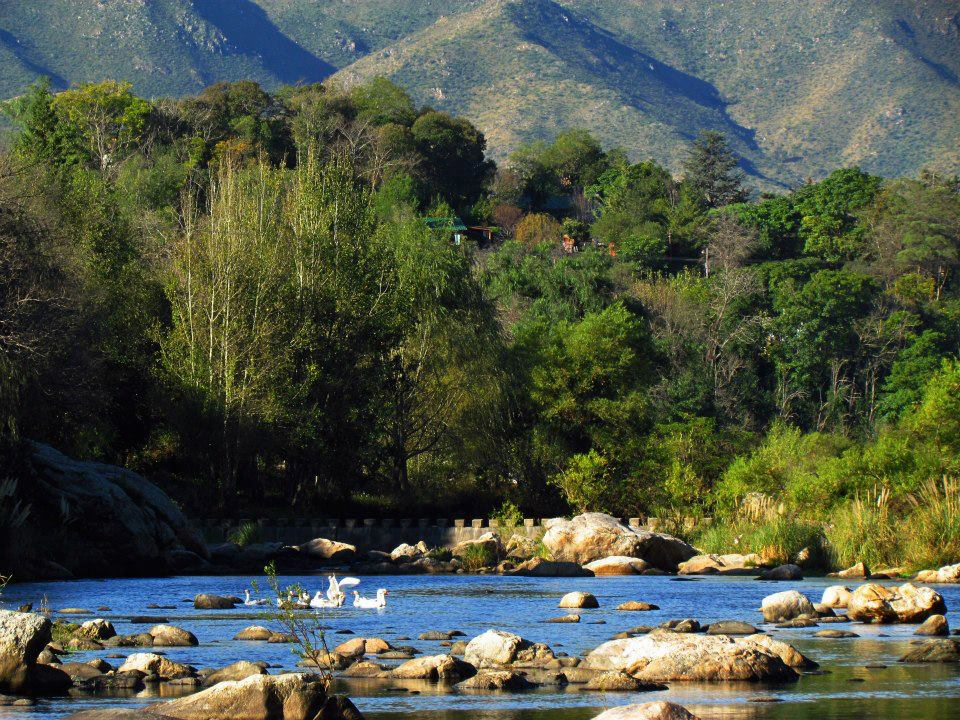
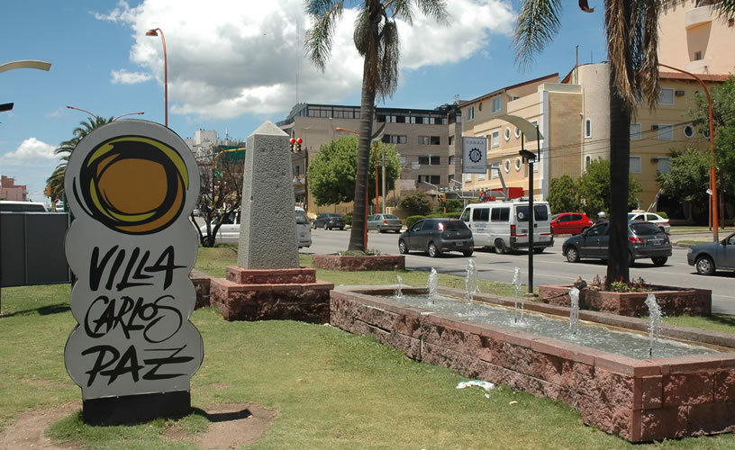
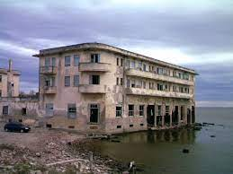

Lugares turísticos
-

Cosquín
Cosquín es una ciudad del oeste de la provincia de Córdoba, Argentina, en pleno Valle de Punilla, a 46 km de la capital provincial. Es cabecera del departamento Punilla, al pie de las Sierras Chicas. Su centro histórico se encuentra a pocos kilómetros al noroeste de la ciudad misma, a orillas de la naciente del río homónimo. Se encuentra al pie del Cerro Pan de Azúcar
-

Villa Carlos Paz
Villa Carlos Paz es una ciudad ubicada al oeste de la provincia de Córdoba, Argentina, Es uno de los centros turísticos más importantes de la provincia de Córdoba y del país, La ciudad es reconocida por ser uno de los destinos veraniegos más elegidos para las vacaciones familiares (enero y febrero).
-
Villa Cura Brochero
Villa Cura Brochero es una localidad ubicada al oeste de la Provincia de Córdoba, Argentina, en el Departamento San Alberto, en el denominado Valle de Traslasierra.
-

Miramar
Miramar es una población ubicada en el noreste de la provincia de Córdoba, Argentina, en el departamento San Justo, sobre la costa sur de la gran laguna de Mar Chiquita (es la única población situada a la vera de "La Mar", como la llaman sus habitantes).
-

El Durazno
El Durazno es una población que se encuentra al pie de la Sierra de los Comechingones, y es cruzada por el río homónimo. Este curso de agua nace en la ladera este del cerro Champaquí.Está ubicada a 7 kilómetros de Villa Yacanto —el pueblo vecino más cercano—, y a 36 kilómetros de Santa Rosa de Calamuchita.
-

San Marcos Sierra
San Marcos Sierras es una localidad ubicada a 150 km de la ciudad de Córdoba en el departamento Cruz del Eje, en la provincia de Córdoba, Argentina.